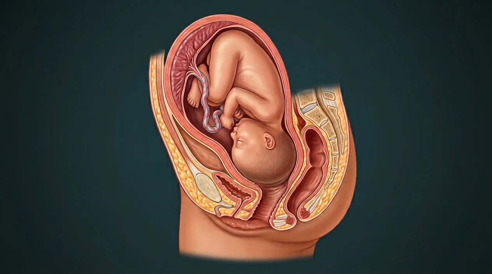

Fetal descentFetal head flexionFetal stationVertex presentationPelvic inletIschial spinesCesarean alternativePubic symphysisPelvic floorComplete cervical dilationSacrumInternal rotationHead extensionRestitutionClinical assessmentVaginal birth canalShoulder deliveryPelvic outletBirth of babyPerineum- 01Complete cervical dilation
- 02Pelvic inlet
- 03Ischial spines
- 04Pelvic outlet
- 05Pubic symphysis
- 06Sacrum
- 07Pelvic floor
- 08Vaginal birth canal
- 09Perineum
- 10Vertex presentation
- 11Fetal station
- 12Fetal descent
- 13Fetal head flexion
- 14Internal rotation
- 15Head extension
- 16Restitution
- 17Shoulder delivery
- 18Birth of baby
- 19Cesarean alternative
- 20Clinical assessment
How this part of the body works
The second stage begins at complete cervical dilation and ends at birth of the baby. In a typical vertex vaginal delivery, the presenting head descends and may flex and rotate to negotiate maternal pelvic dimensions, then extend beneath the pubic arch. The NEW digital cutaway illustrates head-down descent into the birth canal BEFORE full birth, not a photograph of delivery, final fetal station or an instructional maneuver. A separate nonpregnant pelvis illustration supplies skeletal context. Position, rate and birth route vary; cesarean delivery may be indicated. No patient-specific progress can be determined from these drawings.
Follow every stage independently
Sperm and egg are separate branches before fertilization. Obstetric gestational weeks are usually counted from the last menstrual period, roughly two weeks before conception. Digital labor-stage illustrations model separate moments, not clinical birth photographs or patient measurements.
See the anatomy at the right scale
Tap an image to enlarge and tap again to close. These are digital educational models, not microscope photos, measured ultrasounds, clinical birth images or exact developmental clocks.
Digital model of head entering the birth canal following dilation; baby has NOT yet been fully delivered.
Existing nonpregnant pelvic reference; no fetus or birth is pictured in this second image.
Read the anatomy, part by part
These 20 structures describe anatomy related to the chapter’s regional illustration. Each entry separates location, function and a clinical point.
Complete cervical dilation
Second stage starts only after cervix is fully open.
What it doesProvides pathway for descent and eventual birth.
Clinical connectionComplete dilation cannot be inferred from a pelvis plate.
Picture context Digital model of head entering the birth canal following dilation; baby has NOT yet been fully delivered.
Pelvic inlet
Upper bony plane of pelvis is entrance to maternal birth pathway.
What it doesDefines one level of potential fetal passage.
Clinical connectionBony shape alone does not predict delivery.
Picture context Digital model of head entering the birth canal following dilation; baby has NOT yet been fully delivered.
Ischial spines
Palpable maternal bony projections help define clinical fetal station.
What it doesProvide a reference plane for presenting part.
Clinical connectionStation requires actual examination, not a static reference picture.
Picture context Digital model of head entering the birth canal following dilation; baby has NOT yet been fully delivered.
Pelvic outlet
Inferior bony and soft-tissue passage beneath pelvis.
What it doesForms later passage as presenting part descends.
Clinical connectionOutlet size varies and is not measured here.
Picture context Digital model of head entering the birth canal following dilation; baby has NOT yet been fully delivered.
Pubic symphysis
Anterior fibrous joint joins pubic bones.
What it doesFrames front of bony outlet.
Clinical connectionNo drawing is a patient-specific measurement.
Picture context Digital model of head entering the birth canal following dilation; baby has NOT yet been fully delivered.
Sacrum
Posterior curved bone contributes to pelvic canal.
What it doesShapes posterior boundary of birth pathway.
Clinical connectionVariation in sacral curvature affects anatomy but not guaranteed outcome.
Picture context Digital model of head entering the birth canal following dilation; baby has NOT yet been fully delivered.
Pelvic floor
Levator ani complex and associated tissues support pelvic organs and stretch in childbirth.
What it doesSupports organs and accommodates passage.
Clinical connectionTissue injury requires clinical evaluation.
Picture context Digital model of head entering the birth canal following dilation; baby has NOT yet been fully delivered.
Vaginal birth canal
Distensible muscular canal continues from cervix toward introitus.
What it doesProvides soft-tissue route for vaginal birth.
Clinical connectionThe regional pelvis image does not show canal expansion during delivery.
Picture context Digital model of head entering the birth canal following dilation; baby has NOT yet been fully delivered.
Perineum
Tissue region between vaginal opening and anus stretches at vaginal birth.
What it doesForms external soft-tissue outlet.
Clinical connectionClinical tear assessment cannot be made from art.
Picture context Digital model of head entering the birth canal following dilation; baby has NOT yet been fully delivered.
Vertex presentation
Fetal head often leads in a head-first vaginal birth.
What it doesProvides common fetal presenting part.
Clinical connectionNot all pregnancies are vertex; image has no fetus.
Picture context Digital model of head entering the birth canal following dilation; baby has NOT yet been fully delivered.
Fetal station
Describes presenting part level relative to maternal ischial spines.
What it doesHelps clinicians communicate descent.
Clinical connectionNo numeric station is assigned to this contextual plate.
Picture context Digital model of head entering the birth canal following dilation; baby has NOT yet been fully delivered.
Fetal descent
Presenting part moves downward with contractions and maternal effort.
What it doesAdvances progress toward birth.
Clinical connectionDuration varies; generalized sequence is not personal advice.
Picture context Digital model of head entering the birth canal following dilation; baby has NOT yet been fully delivered.
Fetal head flexion
Head flexion can present a smaller effective diameter through pelvis.
What it doesFacilitates engagement for many vertex births.
Clinical connectionDepends on actual fetal position, not fixed by pelvis drawing.
Picture context Digital model of head entering the birth canal following dilation; baby has NOT yet been fully delivered.
Internal rotation
Fetal head may turn as it descends through pelvis.
What it doesAligns head with maternal outlet in typical mechanism.
Clinical connectionExact rotations vary; do not assign to every birth.
Picture context Digital model of head entering the birth canal following dilation; baby has NOT yet been fully delivered.
Head extension
As head passes beneath pubic arch, it may extend during vaginal birth.
What it doesSupports emergence of head in typical vertex sequence.
Clinical connectionA static pelvis alone cannot show this stage.
Picture context Digital model of head entering the birth canal following dilation; baby has NOT yet been fully delivered.
Restitution
After head emerges it may turn toward its relation to shoulders.
What it doesReflects fetal head-shoulder alignment.
Clinical connectionDo not confuse with placental separation.
Picture context Digital model of head entering the birth canal following dilation; baby has NOT yet been fully delivered.
Shoulder delivery
Shoulders follow head as fetus moves through maternal outlet.
What it doesCompletes passage of upper body.
Clinical connectionAny obstruction needs professional management, not a diagram.
Picture context Digital model of head entering the birth canal following dilation; baby has NOT yet been fully delivered.
Birth of baby
After head, shoulders and body emerge, second labor stage ends.
What it doesDefines transition to third placental stage.
Clinical connectionVaginal and cesarean birth routes are clinically distinct.
Picture context Digital model of head entering the birth canal following dilation; baby has NOT yet been fully delivered.
Cesarean alternative
Some births occur surgically via abdominal and uterine incision rather than vaginal canal.
What it doesRecognizes varied medically appropriate routes.
Clinical connectionThe pictured bony pelvis does not predict necessity of surgery.
Picture context Digital model of head entering the birth canal following dilation; baby has NOT yet been fully delivered.
Clinical assessment
Maternal and fetal wellbeing and actual progress are assessed in clinical care.
What it doesProtects safety when labor differs from a textbook pattern.
Clinical connectionThis atlas supplies anatomy only, not delivery instructions.
Picture context Digital model of head entering the birth canal following dilation; baby has NOT yet been fully delivered.
Five questions about Labor stage 2 · birth of baby
Short answers grounded in the structures described above. Use the illustrated guide for anatomical context.
When does the second stage of labor start and finish?
It begins at complete cervical dilation and ends when the baby is born. The later delivery of placenta belongs to a distinct third stage.
How is fetal station described during labor?
Clinical assessment relates the presenting fetal part to the level of maternal ischial spines. The static pelvis plate cannot measure station or show an actual fetus.
Why may the fetal head rotate during vaginal birth?
In a typical vertex mechanism, descent and internal rotation help align the presenting head with maternal pelvic dimensions. Birth mechanism and position vary from person to person.
Is every second stage a vaginal birth?
No. Delivery route depends on maternal and fetal circumstances, and cesarean birth may be clinically appropriate. A general pelvis image cannot predict the safest route.
What does the labor-stage-two picture actually show?
The new digital cutaway depicts a head-down fetus descending into the vaginal birth canal following complete dilation. The baby has not yet been fully delivered, and it is not a photograph or measurement of an individual delivery. A separate existing pelvis image shows nonpregnant skeletal context.
Related anatomy guides
Follow these connected structures and body systems in the illustrated atlas.
 Labor stage 1 · cervix dilatesSeparate first-stage birth chapter: uterine contractions, cervical effacement and dilation to complete opening.↗
Labor stage 1 · cervix dilatesSeparate first-stage birth chapter: uterine contractions, cervical effacement and dilation to complete opening.↗ Labor stage 3 · delivery of placentaSeparate third-stage birth chapter: placental separation, uterine contraction, membranes and postpartum bleeding awareness.↗
Labor stage 3 · delivery of placentaSeparate third-stage birth chapter: placental separation, uterine contraction, membranes and postpartum bleeding awareness.↗ Uterus — layers & cavityThe womb in cross-section: endometrium, junctional zone, myometrium, cavity, isthmus and the key clinical boundaries.↗
Uterus — layers & cavityThe womb in cross-section: endometrium, junctional zone, myometrium, cavity, isthmus and the key clinical boundaries.↗ Female pelvis & perineumThe female pelvic floor in sagittal section: bladder and urethra, vagina and anteverted uterus, rectum behind — plus the ligaments and pouches that position them.↗
Female pelvis & perineumThe female pelvic floor in sagittal section: bladder and urethra, vagina and anteverted uterus, rectum behind — plus the ligaments and pouches that position them.↗Further reading
General anatomy references and related source chapters for continued study. These links do not make the digital illustrations clinical images or certify every anatomical variant.
This educational page is not medical advice and has not undergone formal clinical peer review. Spotted an error? Contact the editor.
Open the regional digital plate, study entries and a short self-test. Visible markers occur only for identifiable sperm and oocyte structures.